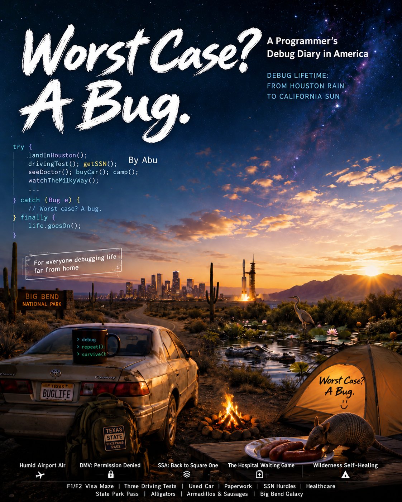

声音与文字STORIES / SPOKEN & WRITTEN
有些事，讲着才明白。
有些话，要慢慢写。Some stories are spoken.
Others take time to write.
同一段生活，可以有不同的表达。选一种喜欢的方式，慢慢看、慢慢听。Different ways of keeping a record of the same life. Choose a way to read or listen at your own pace.
01

听一段生活LISTEN
02播客Podcast
已经录下的生活与探索，挑一期慢慢听。Recorded stories of life and exploration. Find an episode to sit with.

连续读下去READ A BOOK
03书籍Books
《大不了就出个Bug》：在线阅读，也可以下载带走。Worst Case, a Bug: read online or download a copy to keep.
把一个问题想清楚THINK ON THE PAGE
04随笔Essays
关于做东西、研究和日常里那些值得多想一步的问题。Notes on making things, research and questions worth another thought.
留一点空白A MOMENT TO NOTICE
小诗Poems
在另一种语言里，试着留下时间与等待。Small attempts to hold time and waiting in another language.